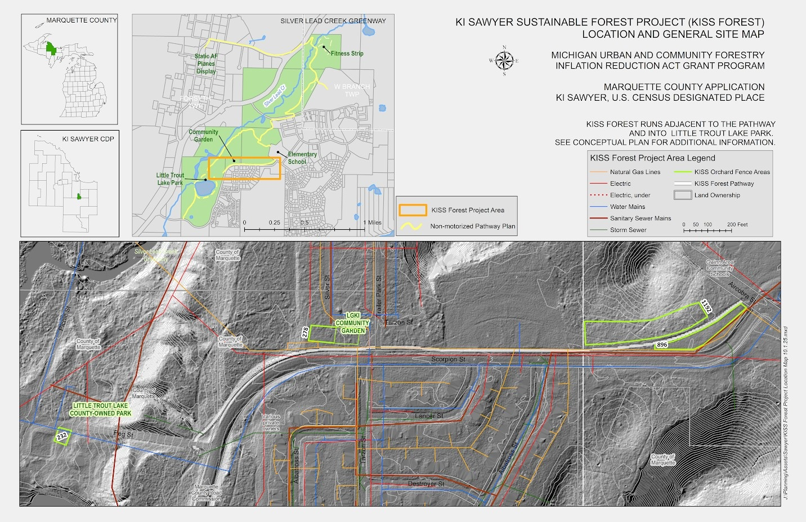

The KI Sawyer Sustainable Food Forest Project
This project blends ecological restoration, food security, and hands-on learning

Something exciting is taking root in KI Sawyer, Michigan. Through the KI Sawyer Sustainable Food Forest Project—supported by the Michigan Urban and Community Forestry IRA Grant—residents are coming together to design, plant, and care for a long-term, community-driven food forest along the Little Trout Lake Park pathway. This project blends ecological restoration, food security, and hands-on learning to create a green space that nourishes both people and the land.
What Is Being Planted?
At the heart of the project is a fruit tree–based guild system—a permaculture approach that layers plants in mutually supportive communities. Early concept guilds include apples paired with strawberries, hazelnuts, lupines, and self-heal. Each species plays a role:
- Apple trees enrich soil and support mycorrhizal networks.
- Hazelnuts stabilize soil and add deep-rooted drought resilience.
- Strawberries offer living mulch that helps retain moisture and nutrients.
- Wild lupine fixes nitrogen, boosting soil fertility.
- Self-heal acts as a medicinal, low-maintenance groundcover.
Together, these plants create perennial systems that feed people, support pollinators, improve soil health, and regenerate the landscape over time.
Where Is It Happening?
The site runs adjacent to the non-motorized pathway near Little Trout Lake Park. The food forest will connect to nearby community spaces, including the LGKI Community Garden, strengthening local access to fresh produce and outdoor learning.
A Multi-Year Community Effort
The project timeline spans from 2026 through 2027, beginning with community-driven design work and moving into site preparation, test plantings, and full food-forest installation:
- 2026: Site design, invasive species removal, and test fruit tree guilds
- Fall 2026: Soil preparation and permaculture groundwork
- Spring 2027: Planting the full KI Sawyer Sustainable Food Forest
Six hands-on workshop events will offer residents paid learning opportunities—including invasive species removal, tree care, permaculture prep, and planting days.
Get Involved
Residents of KI Sawyer are invited to influence plant selection, take part in site prep and planting, and earn a $10/hour stipend for participating in workshops. Community members can join the Food Forest Committee or fill out project surveys to share their input.
The KI Sawyer Sustainable Food Forest is more than a planting project—it’s a long-term investment in community resilience, ecological health, and local connection. With neighbors learning and planting side by side, this forest will grow into a living legacy for generations.
Contact Jordan Russell at jrussell@letsgrowki.org for more information.